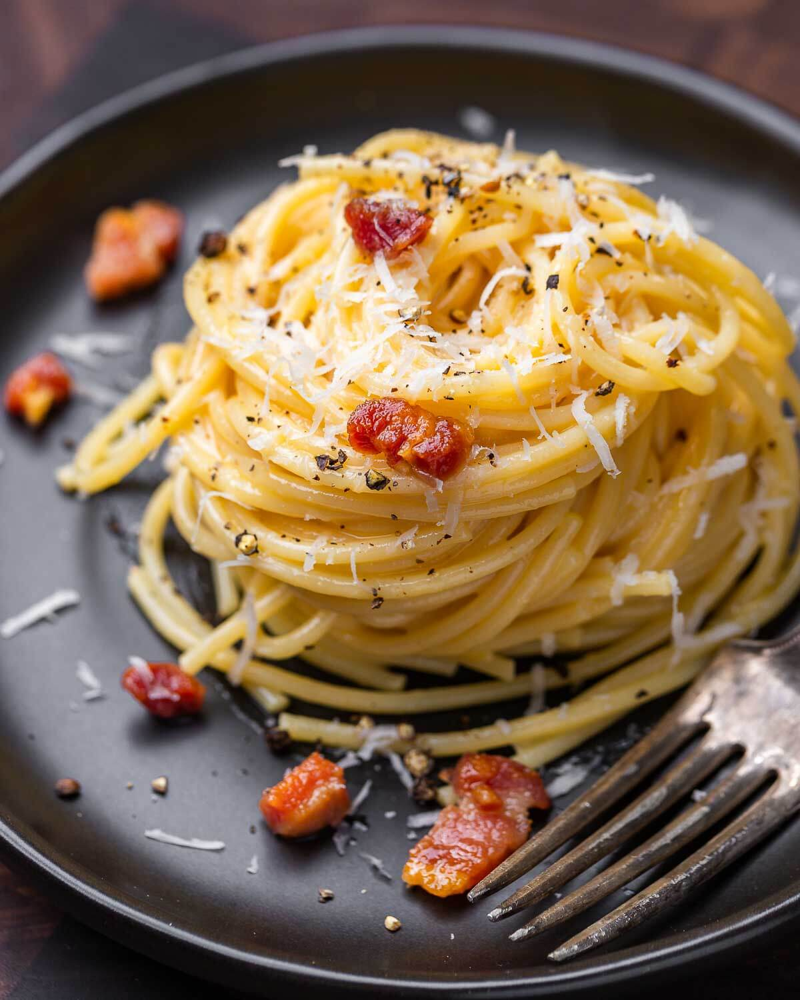

Home
Spaghetti Carbonara

Description
Spaghetti carbonara is a creamy pasta dish made with eggs, cheese, pancetta, and pepper. Its rich, velvety sauce is
created without any cream, relying on the heat of the pasta to emulsify the ingredients.
This Roman classic is cherished for its bold flavors and comforting texture. It's quick to make and perfect for a
satisfying homemade meal.
Steps to make the dish
- Bring a pot of salted water to a boil and cook spaghetti until al dente.
- In a pan, cook diced pancetta until crispy; set aside.
- In a bowl, whisk together eggs, grated Parmesan cheese, and black pepper.
- Drain spaghetti, reserving some pasta water.
- Quickly mix hot spaghetti with the egg mixture, adding pasta water as needed for creaminess.
- Stir in the cooked pancetta.
- Serve immediately, topped with extra cheese and pepper.
- Enjoy while hot for the best flavor and texture.